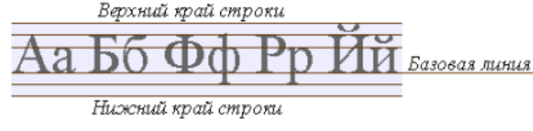

Базовая линия - это линия, на которой располагаются "сидят" символы в текстовой строке, Например буква "А" сидит прямо на этой линии, а вот строчная буква "у" сидит на ней же, но свесив ноги.
Вертикальное выравнивание элемента относительно строки может выражаться в процентах, пикселях или любых других принятых в CSS единицах измерения, причем эти единицы могут принимать как положительные, так и отрицательные значения